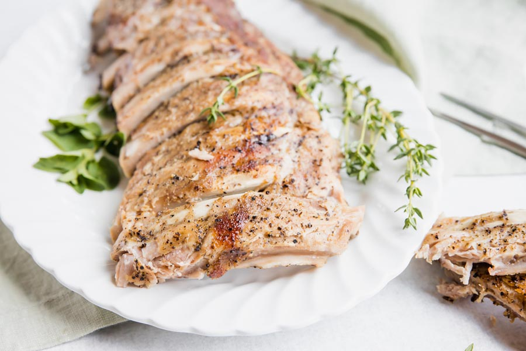

Slow Cooker Ribs

SERVES 2 / PREP TIME: 5 minutes / COOK TIME: 4 hours
Ingredients:
- 1 (3-pound) slab baby back ribs
- 1 teaspoon paprika
- 1 teaspoon garlic powder
- 1/2 teaspoon onion powder
- 1/2 teaspoon chilli powder
- 1/4 teaspoon ground cumin
- 1 teaspoon sea salt
- 1/4 cup water
Steps:
- Remove the membrane on the back of the ribs and cut
them into 4 sections.
- In a small bowl, mix the paprika, garlic powder, onion
powder, chilli powder, cumin, and salt. Rub the ribs with
the seasoning mix.
- Pour the water into a slow cooker crock. Add the Ribs
and cover the with the lid. Cook on high for 4 hours or until
tender.
- Serve immediately or store in an airtight container in
the refrigerator for up to 3 days.